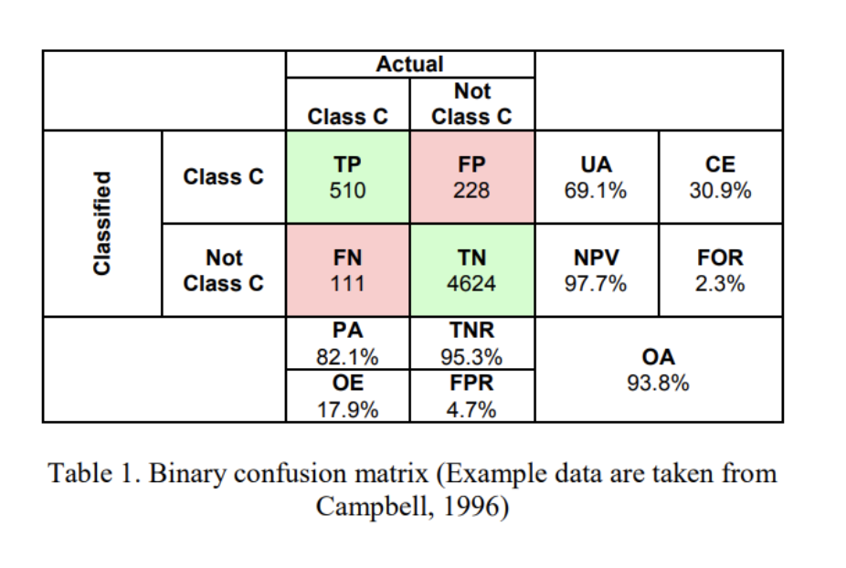
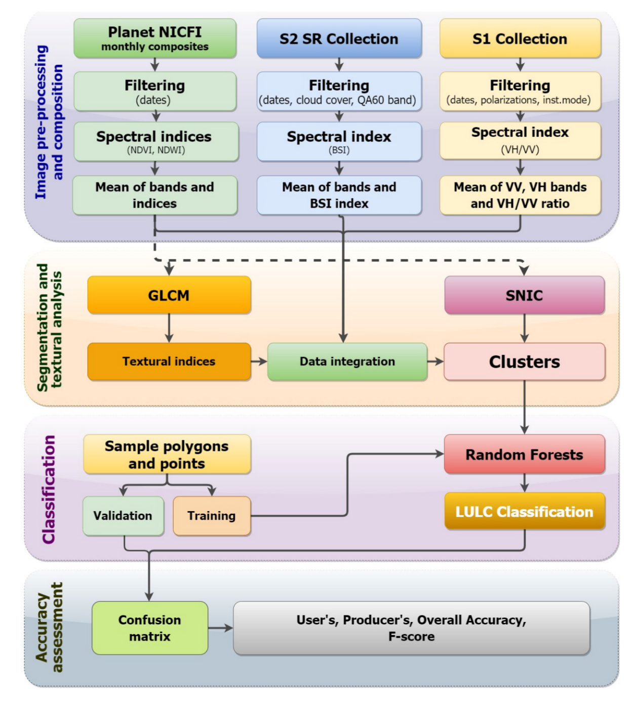

7 Classification II
7.1 Summary
This week we continued working on classifications. I will cover sub-pixel-based analysis, object-based analysis and accuracy below. The main take away this week is this: When classification models do not consider spatial autocorrelation (a measure of similarity between nearby data), it will likely lead to overly optimistic accuracy levels.
What happens if a classification model doesn’t consider spatial autocorrelation ? The model will have better accuracy that it actually does
7.1.1 Sub-pixel-based Analysis
Sub-pixel analysis is useful when a pixel has more than one land cover type. A method that can be applied is Spectralmixture analysis (SMA). It is used to decompose the spectral reflectance within a pixel from surface reflectance from different material. “The mixing can be modeled as the sum of end member reflectance multiplied by their fraction contribution to a best-fit mixed spectrum.” (Jensen 2015) In short this means it determines the proportion of land cover per pixel.
7.1.2 Object-based Analysis
Object-based image analysis (OBIA) is the counterpart to pixel-based analysis. Rather than classifying each pixel OBIA, detects meaningful objects in groups of nearby pixels to classify and image. OBIA follows a two step process:
1.Segmentation of the image into objects based on spectral and spatial characteristics of neighboring pixels using a segmentation algorithm, and
2.Classification of objects using either supervised or unsupervised approaches.
There are different segmentation algorithms that can be used. The most common on is the Simple Non-Iterative Clustering (SNIC). SNIC assembles clusters from neighboring pixels based on three parameters of compactness, connectivity, and neighborhood size. (Jeffrey A. Cardille et al., n.d.)
7.1.3 Accuracy
When ever we do a classification of a remote sensing image, we need to determine the accuracy of the classification meaning the probability that the model has classified a pixel or object correctly. There are different types of accuracy.
- Producer Accuracy - the classification results meet the expectation of the model creator \(TP/TP+FN\)
- User’s accuracy - pixels are incorrectly classified as a known class when they should have been classified as something else \(TP/TP+FP\)
- Overall accuracy - represents the combined fraction of correctly classified pixels across all land cover types. \(TP+TN/TP+FP+FN+TN\)
7.2 Application
I am looking again at informal settlements mapping because when I looked at the topic it in week three, I didn’t have enough content to really understand the method applied yet.
The study discussed in week three used publicly available data (sentinel 2) and pixel based classification with a random forest algorithm (Matarira, Mutanga, and Naidu 2022) to map informal settlements in Durban, South Africa. In this study, the focus is on exploring the potential of open data to map settlements. It was able to detect informal settlements with a overall accuracy of around 80%.
This week, I am looking at a different study by the same authors, where Matarira et al. (2022) use object based-classification to identify informal settlements also in Durban. The image below gives a good overview of the methodology. It uses both public medium resolution data sets (sentinel 1 and 2) as well as high resolution data (Planet). This method identified informal settlement with an accuracy of 87%, so a bit higher than the open data study.

7.3 Reflection
I personally feel like this lecture/ practical was a little rushed. I am starting to get a rough overview on the different types of classifications. But the practical code is pretty complex. While it works when I copy it over to GEE and its cool to see how it builds up the maps step by step, I personally would need a bit more guidance and hand-holding to really put these concepts into practice.
A resource that I started using and that I find really helpful is this online book: https://www.eefabook.org/. It has fantastic videos that guide you step by step through how to implement the different methods in GEE. I am working my way through but haven’t made it to object-based classification yet. The book and videos are a good addition to the lectures and practicals, which go deeper into the theory and are more critical on methods.
Doing this module, I have been thinking a lot about how to find the right level of detail in all of this content for me. I’ve been thinking about what type of role I want to have after learning all of these new contents and skills. Do I want to do remote sensing analysis myself in my work going forward? Or, do I want to be in the position to work with people who do this? Or be able to procure such analysis? Finding answers to these question, over the summer perhaps, will be useful to be strategic in how I select courses for the remainder of the course and what content to really focus on.
In any case, I feel like my brain has been expanding over the past few months (sometimes with a lot of growing pain). That in itself is great!